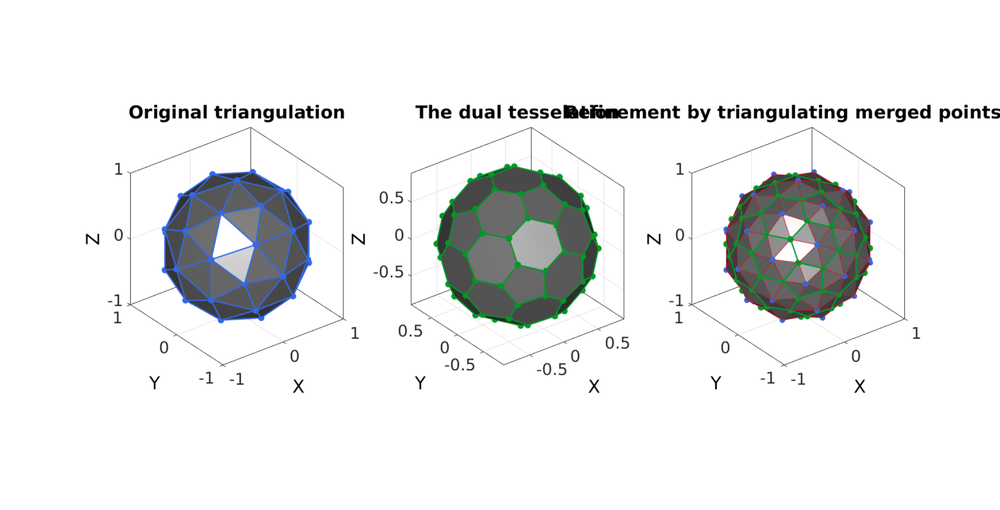
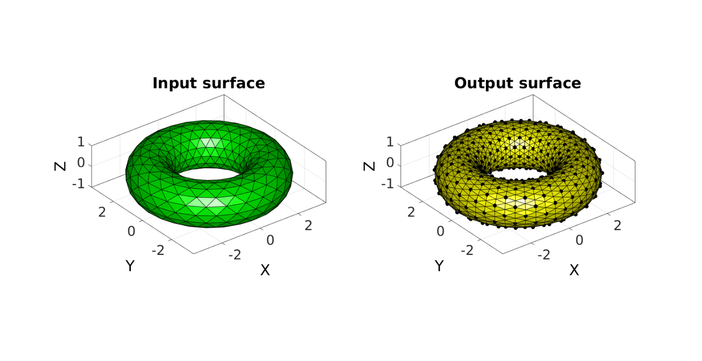
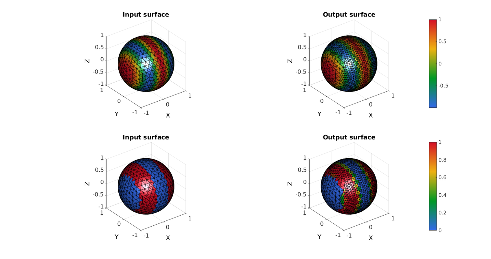
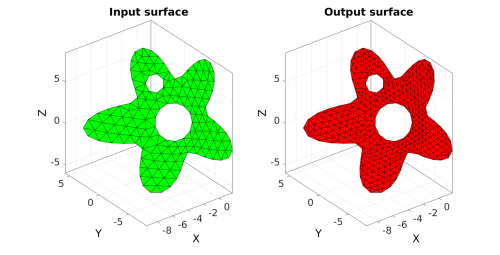
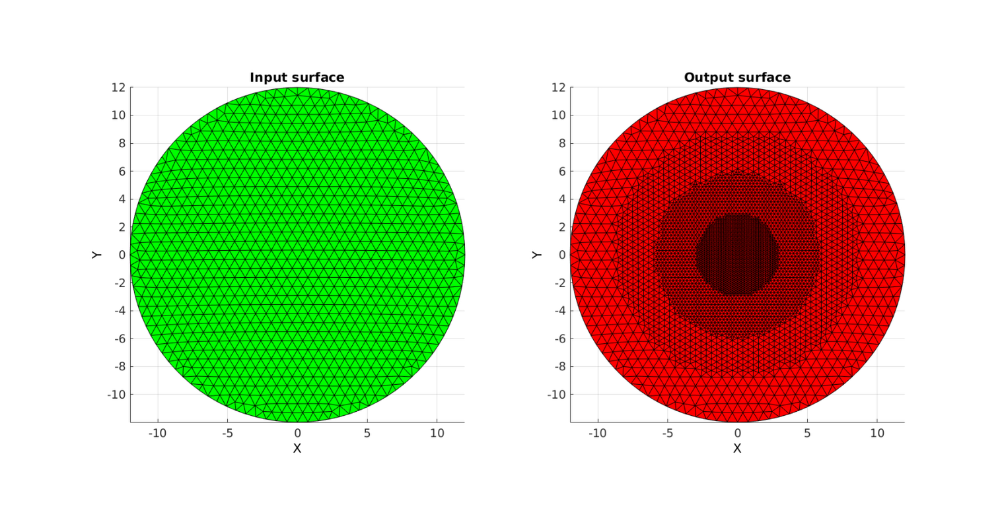

subTriDual
Below is a demonstration of the features of the subTriDual function
Contents
- Syntax
- Description
- Examples
- Example: Illustrating the refinement process
- Example: Refining a closed surface
- Example: Refining a local region of a mesh (e.g. region on a sphere)
- Example Smoothening the mesh
- Example: Keeping track of surface data e.g. color
- Example: use for non-closed 3D surfaces with voids
- Example: Iterative refinement
clear; close all; clc;
Syntax
[Ft,Vt,Ct,indIni]=subTriDual(F,V,logicFaces);
Description
This function refines the surface region defined by the logicFaces beloning to the surface given by the faces F and vertices V. The region is refined by: 1) taking the dual tesselation, 2) retriangulating the dual mesh to include the original points. See also: triPolyDualRefine
Examples
Plot settings
fontSize=25; cMap=gjet(4); faceAlpha=0.5; plotColor1=cMap(1,:); plotColor2=cMap(2,:); plotColor3=cMap(4,:); faceColor1=0.5*ones(1,3); edgeWidth=2; markerSize=10;
Example: Illustrating the refinement process
Building example geometry
%Defining geodesic dome r=1; %sphere radius n=1; %Refinements [F,V,~]=geoSphere(n,r);
Deriving the dual of the patch data
[Vd,Fd]=patch_dual(V,F);
% Refine surface region using subTriDual
[Ft,Vt,Ct,indIni]=subTriDual(F,V);
%Plotting results hf=cFigure; subplot(1,3,1); hold on; title('Original triangulation','FontSize',fontSize); hp=gpatch(F,V,faceColor1,plotColor1); set(hp,'LineWidth',edgeWidth,'Marker','o','MarkerFaceColor',plotColor1,'MarkerEdgeColor','none','MarkerSize',markerSize); axisGeom(gca,fontSize); camlight headlight; subplot(1,3,2); hold on; title('The dual tesselation','FontSize',fontSize); for i=1:1:numel(Fd) Fs=Fd{i}; hp=gpatch(Fs,Vd,faceColor1,plotColor2); set(hp,'LineWidth',edgeWidth,'Marker','o','MarkerFaceColor',plotColor2,'MarkerEdgeColor','none','MarkerSize',markerSize); end axisGeom(gca,fontSize); camlight headlight; subplot(1,3,3); hold on; title('Refinement by triangulating merged pointsets','FontSize',fontSize); gpatch(Ft,Vt,faceColor1,plotColor3); hp=plotV(V,'k.','MarkerSize',markerSize*3); set(hp,'Color',plotColor1); for i=1:1:numel(Fd) Fs=Fd{i}; hp=gpatch(Fs,Vd,'none',plotColor2); set(hp,'LineWidth',edgeWidth,'Marker','o','MarkerFaceColor',plotColor2,'MarkerEdgeColor','none','MarkerSize',markerSize); end hp=plotV(Vt(indIni,:),'k.'); set(hp,'Color',plotColor1,'MarkerSize',markerSize) axisGeom(gca,fontSize); camlight headlight; drawnow;
Example: Refining a closed surface
Building example geometry
r=1; %Radius rc=2.5; %Central radius nr=16; nc=25; [F,V]=patchTorus(r,nr,rc,nc,'tri');
Refine surface using subTriDual
[Ft,Vt,~,indIni]=subTriDual(F,V);
Plotting input surface model
cFigure; subplot(1,2,1); title('Input surface','FontSize',fontSize); hold on; gpatch(F,V,'g'); axisGeom(gca,fontSize); camlight headlight; subplot(1,2,2); title('Output surface','FontSize',fontSize); hold on; gpatch(Ft,Vt,'y'); plotV(Vt(indIni,:),'k.','MarkerSize',25); axisGeom(gca,fontSize); camlight headlight; colormap gjet; drawnow;
Example: Refining a local region of a mesh (e.g. region on a sphere)
Building example geometry
%Defining geodesic dome r=1; %sphere radius n=3; %Refinements [F,V,~]=geoSphere(n,r);
Define face list for refinement
logicNodes=V(:,3)>0.6 | V(:,2)<-0.5; logicFaces=all(logicNodes(F),2);
Refine surface region using subTriDual
[Ft,Vt,Ct,indIni]=subTriDual(F,V,logicFaces);
Example Smoothening the mesh
%Smoothen newly introduced nodes cPar.Method='HC'; cPar.n=50; cPar.RigidConstraints=indIni; [Vt]=tesSmooth(Ft,Vt,[],cPar); %Smoothen boundary nodes on original mesh nodes E=patchBoundary(Ft(Ct==1,:),Vt); indEdge=unique(E(:)); logicEdge=false(size(Vt,1),1); logicEdge(indEdge)=1; indRigid=find(~logicEdge); cPar.Method='HC'; cPar.n=50; cPar.RigidConstraints=indRigid; [Vt]=tesSmooth(Ft,Vt,[],cPar);
Plotting input surface model
cFigure; subplot(1,2,1); title('Input surface','FontSize',fontSize); hold on; gpatch(F,V,logicFaces); axisGeom(gca,fontSize); camlight headlight; subplot(1,2,2); title('Output surface','FontSize',fontSize); hold on; gpatch(Ft,Vt,Ct); % [hp]=patchNormPlot(Ft,Vt,0.25); plotV(Vt(indIni,:),'k.','MarkerSize',25); plotV(Vt(logicEdge,:),'y.','MarkerSize',50); colormap gjet; axisGeom(gca,fontSize); camlight headlight; drawnow;
Example: Keeping track of surface data e.g. color
X=V(:,1); XF=mean(X(F),2); %Continuous color C=cos(XF*2*pi);%Continuous color C2=double(C<0); %"Sparse" color to help show averaging at transitions % Refine surface using subTriDual [Ft,Vt,~,indIni,Ct]=subTriDual(F,V,logicFaces,C); [~,~,~,indIni,Ct2]=subTriDual(F,V,logicFaces,C2);
Plotting surface models
cFigure; subplot(2,2,1); hold on; title('Input surface','FontSize',fontSize); gpatch(F,V,C); axisGeom(gca,fontSize); colormap gjet; colorbar; camlight headlight; subplot(2,2,2); hold on title('Output surface','FontSize',fontSize); gpatch(Ft,Vt,Ct); axisGeom(gca,fontSize); colormap gjet; colorbar; camlight headlight; subplot(2,2,3); hold on; title('Input surface','FontSize',fontSize); gpatch(F,V,C2); axisGeom(gca,fontSize); colormap gjet; colorbar; camlight headlight; subplot(2,2,4); hold on title('Output surface','FontSize',fontSize); gpatch(Ft,Vt,Ct2); axisGeom(gca,fontSize); colormap gjet; colorbar; camlight headlight; drawnow;
Example: use for non-closed 3D surfaces with voids
Creating complex example surface
%Boundary 1 ns=150; t=linspace(0,2*pi,ns); t=t(1:end-1); r=6+2.*sin(5*t); [x,y] = pol2cart(t,r); z=1/10*x.^2; V1=[x(:) y(:) z(:)]; %Boundary 2 ns=100; t=linspace(0,2*pi,ns); t=t(1:end-1); [x,y] = pol2cart(t,ones(size(t))); z=zeros(size(x)); V2=[x(:) y(:)+4 z(:)]; %Boundary 3 ns=75; t=linspace(0,2*pi,ns); t=t(1:end-1); [x,y] = pol2cart(t,2*ones(size(t))); z=zeros(size(x)); V3=[x(:) y(:)-0.5 z(:)]; %Create Euler angles to set directions E=[0.25*pi -0.25*pi 0]; [R,~]=euler2DCM(E); %The true directions for X, Y and Z axis V1=(R*V1')'; %Rotate polygon V2=(R*V2')'; %Rotate polygon V3=(R*V3')'; %Rotate polygon regionCell={V1,V2,V3}; %A region between V1 and V2 (V2 forms a hole inside V1)
Meshing the region (See also regionTriMesh2D)
%Defining a region and control parameters (See also |regionTriMesh2D|) pointSpacing=1; %Desired point spacing resampleCurveOpt=1; interpMethod='linear'; %or 'natural' [F,V]=regionTriMesh3D(regionCell,pointSpacing,resampleCurveOpt,interpMethod);
logicFaces=true(size(F,1),1); [Ft,Vt,Ct,indIni]=subTriDual(F,V,logicFaces);
Plotting surface models
cFigure; subplot(1,2,1); hold on; title('Input surface','FontSize',fontSize); gpatch(F,V,'g'); axisGeom(gca,fontSize); subplot(1,2,2); hold on; title('Output surface','FontSize',fontSize); gpatch(Ft,Vt,'r'); view(2); axisGeom(gca,fontSize); drawnow;
Example: Iterative refinement
Creating example geometry
ns=150;
t=linspace(0,2*pi,ns);
t=t(1:end-1);
r=12;
x=r*sin(t);
y=r*cos(t);
V1=[x(:) y(:)];
regionCell={V1};
pointSpacing=2; %Desired point spacing
resampleCurveOpt=1;
interpMethod='linear'; %or 'natural'
[F,V]=regionTriMesh2D(regionCell,pointSpacing,resampleCurveOpt,interpMethod);
V(:,3)=0;
distanceSplitSteps=[9 6 3]; Ft=F; Vt=V; for q=1:numel(distanceSplitSteps) D=sqrt(sum(Vt.^2,2)); [DF]=vertexToFaceMeasure(Ft,D); logicFaces=DF<(distanceSplitSteps(q)); indNodesFaces=Ft(logicFaces,:); indNodesFaces=unique(indNodesFaces(:))+size(Ft,1); [Ft,Vt,Ct,indIni]=subTriDual(Ft,Vt,logicFaces); %Smoothen newly introduced nodes cPar.Method='HC'; cPar.n=50; cPar.RigidConstraints=indIni; [Vt]=tesSmooth(Ft,Vt,[],cPar); %Smoothen boundary nodes on original mesh nodes E=patchBoundary(Ft(Ct==1,:),Vt); indEdge=unique(E(:)); indNodesFaces=Ft(Ct~=1,:); logicValid=ismember(indEdge,indNodesFaces); indEdge=indEdge(logicValid); logicEdge=false(size(Vt,1),1); logicEdge(indEdge)=1; indRigid=find(~logicEdge); cPar.Method='HC'; cPar.n=50; cPar.RigidConstraints=indRigid; [Vt]=tesSmooth(Ft,Vt,[],cPar); end
Plotting surface models
cFigure; subplot(1,2,1); hold on; title('Input surface','FontSize',fontSize); gpatch(F,V,'g'); axisGeom(gca,fontSize); view(2); axis off; subplot(1,2,2); hold on; title('Output surface','FontSize',fontSize); gpatch(Ft,Vt,'r'); view(2); axisGeom(gca,fontSize); view(2); axis off; drawnow;

GIBBON www.gibboncode.org
Kevin Mattheus Moerman, gibbon.toolbox@gmail.com
GIBBON footer text
License: https://github.com/gibbonCode/GIBBON/blob/master/LICENSE
GIBBON: The Geometry and Image-based Bioengineering add-On. A toolbox for image segmentation, image-based modeling, meshing, and finite element analysis.
Copyright (C) 2018 Kevin Mattheus Moerman
This program is free software: you can redistribute it and/or modify it under the terms of the GNU General Public License as published by the Free Software Foundation, either version 3 of the License, or (at your option) any later version.
This program is distributed in the hope that it will be useful, but WITHOUT ANY WARRANTY; without even the implied warranty of MERCHANTABILITY or FITNESS FOR A PARTICULAR PURPOSE. See the GNU General Public License for more details.
You should have received a copy of the GNU General Public License along with this program. If not, see http://www.gnu.org/licenses/.